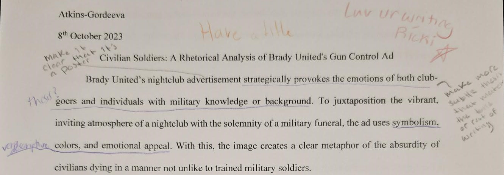
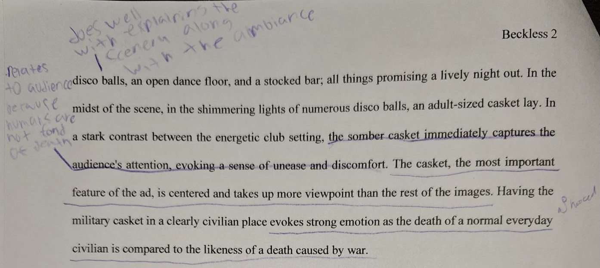

Civilian Soldiers:
Assault Weapons in Society
- Polished
- Rough
- Techniques
Polished Draft
Project Two analyzes the theme of an ad. By understanding that each detail of the advertisement had significant meaning allowed for a deeper understanding of the company that produced or endorsed it. In the Brady United assault weapon ban advertisement, the words in the photo were not the only ways to decipher the intended meaning.
In a bold and daunting move, Brady United tactically targets a variety of civilians and those with military experience with three images. The series of images all strategically provoke the emotions reluctantly acquired, and cultivated, with each growing tragedy from gun violence. While all three photos published by Brady United each introduce Brady's message, they use different methods to target different audiences. The most energetic and thought provoking photo is unexpectedly a representation of a nightclub. A place synonymous with joy and entertainment, love and fun, memories and laughter—diluted by the heart stopping appearance of a casket.
Looking beyond the casket, the background is adorned with various shades and hues of red, white, and blue and a seemingly endless supply of detail. The advertisement's design and studious positions introduce a multitude of information—a picture truly worth a thousand words. To add to the energetic environment, the club space is adorned with an open dance floor, a stocked bar, and numerous disco balls that reflect shimmering light upon the scene. Though the background is captivating, the eye cannot help but return to the central focus.
Illuminated by the disco balls' angelic rays, the adult sized casket draped with the American flag tells a tale of several tragedies that routinely occur in civilian places. The casket being decorated with the American flag emphasizes the ads' theme. Assault weapons were first developed during World War II by German inventor Hugo Schmeisser as a part of the Soviet Unions' war efforts. As it was then and as it continues to be, assault weapons are made for military use during times of war and on battle fields. With the military casket, Brady's ad calls into question the reasoning of civilians having assault weapons in their homes and communities.
The choice of colors intensifies the impact. Dark, foreboding shades dominate the walls and floors, accentuating the brighter hues of the casket, and the disco balls. Highlighting the caskets reminder, the darker variety of the background contrasts with the brighter and more vivid colors on the casket. The deliberate use of red, white, and blue goes beyond mere patriotism; it taps into the collective conscience of a nation. Red, embodying passion and urgency, resonates with the response the creators aimed to evoke. White, typically associated with purity, here, stands as a stark reminder of innocence lost. Blue, often linked with stability, takes on a haunting quality, reminding the audience of the stability they may seek in the face of rampant violence.
Brady's series of casket images in civilian areas, are all audacious statements considering the vibrant history of American patriotism and the fight of citizens arguing for their Second Amendment right to bear arms. In the 232 years since the Bill of Rights was ratified, there have been more than one thousand challenges to not only the Second Amendment's meaning, but also its place in modern society.
In possibly the most significant case in which the meaning of the Second Amendment was confirmed and clarified, District of Columbia v. Heller (2008) led to the Supreme Court to affirm the Second Amendment to mean an individual has the right to possess firearms for self-defense within the home. With the ruling that each individual could possess firearms in their home, not without regulations, set into stone that trained military members were no longer the only ones that could possess firearms. A data collection ("Number of firearm deaths in the United States from 1990 to 2021") found there was around 1,110,298 shooting related deaths in America. In the ten years after the District of Columbia v. Heller case, deaths by firearms had risen by 17%.
Every detail of Brady's image is a carefully designed message. A noticeable feature of the photo is the multitude of disco balls, it's not a fashion sense but instead a symbol. Twenty-five is a powerful number to Brady's plan and the statistics they share. In an alarming statistic, the United States has a mass shooting rate twenty-five times higher than other developed countries. Relating directly to Brady's goal, the organization embodies the number by wanting to reduce gun violence by 25% before the year 2025.
In addition to the disco balls and it's statistics, the advertisement has multiple, but subtle, allusions of various tragic events from gun violence. Each detail crammed into the image make it appear spacious but also cramped, as each detail has a meaning and nothing is placed as a space filler. It almost feels suffocating to see the many different hints, but this allowed Brady to successfully capture the audiences' attention and make them want to further explore the deeper meanings.
The red bathroom in the upper left corner, acts as a poignant reminder of specific tragedies etched into our national consciousness. Whether a recall to the Pulse Nightclub Shooting or to countless other bathrooms where gun violence took place, the tales of the tragedies survivors and victims had to endure in them, are at the forefront of the audiences minds. It compels viewers to confront the harsh realities of society and question the urgency of change. This allusion, while subtle, acts as a bridge between the fictional narrative of the advertisement and a chilling truth of the United States. When recognizing these symbols, the audience engage not only with the advertisement but also with their own experiences and emotions that have come and gone from the continuity of mass shootings.
The Brady organization has roots that go back to 1974 when the National Council to Control Handguns was founded ("History of Brady"). In the coming years, the organization's name evolved as it grew. During Ronald Reagan's assassination attempt of 1981, White House Press Secretary Jim Brady was shot and sustained a head injury that impacted the rest of his life. With the renewed momentum in the fight against gun violence, Sarah and Jim Brady went through multiple challenges and various meetings with legislators in attempts to pass the Brady Bill. The Brady Bill was passed in 1993, which made it official that Brady Background Checks would be required for all firearm purchases. In 2000, the Boards of Trustees for Handgun Control and the Center to Prevent Handgun Violence were renamed to Brady Campaign to Prevent Handgun Violence and The Brady Center to Prevent Gun Violence.
Almost fifty years after the National Council to Control Handguns was founded, and the seeds for Brady were planted, in 2023 Brady is still fighting for tougher gun control laws. In terms of Brady's stance on assault weapons, they stated, "These weapons are uniquely lethal, designed to kill as many people as possible, as quickly as possible." Brady's latest fight is to ban assault rifles, weapons of war, from civilian hands.
In 1994, the Federal Assault Weapons Ban (AWB) was passed as part of the Violent Crime Control and Law Enforcement Act of 1994. The AWB, which prohibited the manufacture, sale, and possession of certain semi-automatic firearms with military-style features, as well as large-capacity magazines, for civilian use, expired in 2004. Since the expiration, the rate of mass shootings increased more than 100%, though critiques and experts disagree on the exact percentage and whether it shows an accurate and fair judgement on the bans' effect.
In Brady's Nightclub gun control ad the audience is reminded of the consequences of the current lax laws regarding assault weapons. Before the advertisements audiences' eyes and mind have the chance to properly process the emotional horror of the sight of the casket induced, their eyes are drawn to the words beneath it. Spanning wider than the casket, though smaller in height, the words of action are shown in bold white. The capitalized statement isn't a logo or catch phrase as seen in most advertisements; instead, it is two short and clipped sentences: "ASSAULT WEAPONS WERE DESIGNED FOR WAR ZONES. NOT OUR COMMUNITIES." The words leave little to imagination or misinterpretation. Though brief, it evokes the same feelings of despair but courage, and helplessness but determination. Brady's use of capitalization is the equivalent of a person with a microphone standing before an audience commanding attention with their posture alone; or even someone standing before a pen-drop quiet room and speaking in an even tone that still manages to carry throughout. Either way, in ten words Brady managed to captivate their audience and induce a multitude of questions. The advertisement does not bite off more than it can chew by directly targeting all firearms, instead it focuses on Brady's main issue: assault weapons.
With the increase of civilian having access to assault weapons, the rates of mass shootings are on the rise, and civilians are exposed to war zones in their communities. Brady United's gun control ad is a poignant and emotionally charged piece that effectively utilizes symbolism, color, and rhetorical appeals to convey its message. By juxtaposing the celebratory atmosphere of a nightclub with the solemnity of a military funeral, the ad compels viewers to confront the harsh reality of gun violence in America. As a call to action, the ad encourages viewers to support the ban on assault weapons, emphasizing the urgent need for policy changes to prevent further tragedies and the creation of civilian soldiers in our communities.
Works Cited
"History of Brady" Brady United, https://www.bradyunited.org/history . Accessed 11 Oct. 2023.
"Number of firearm deaths in the United States from 1990 to 2021." Statista, Feb. 2023, https://www.statista.com/statistics/258913/number-of-firearm-deaths-in-the-united-states/ . Accessed 11 Oct. 2023.
"Stop The Assault: Ban Weapons of War." Brady United, 20 Apr. 2023, https://www.bradyunited.org/act/ban-weapons-war . Accessed 26 Sep. 2023.
Rough Draft
Project Two analyzes the theme of an ad. By understanding that each detail of the advertisement had significant meaning allowed for a deeper understanding of the company that produced or endorsed it. In the Brady United assault weapon ban advertisement, the words in the photo were not the only ways to decipher the intended meaning.
Brady United's nightclub advertisement strategically provokes the emotions of both club-goers and individuals with military knowledge or background. To juxtaposition the vibrant, inviting atmosphere of a nightclub with the solemnity of a military funeral, the ad uses symbolism, colors, and emotional appeal. With this, the image creates a clear metaphor of the absurdity of civilians dying in a manner not unlike to trained military soldiers.
The ad opens with a vivid portrayal of a nightclub - a place synonymous with joy and entertainment. With an energizing mix of dark and cool colors, the club space is adorned with disco balls, an open dance floor, and a stocked bar; all things promising a lively night out. In the midst of the scene, in the shimmering lights of numerous disco balls, an adult-sized casket lay. In a stark contrast between the energetic club setting, the somber casket immediately captures the audience's  attention, evoking a sense of unease and discomfort. The casket, the most important feature of the ad, is centered and takes up more viewpoint than the rest of the images. Having the military casket in a clearly civilian place evokes strong emotion as the death of a normal everyday civilian is compared to the likeness of a death caused by war.
The choice of colors intensifies the impact. Dark, foreboding shades dominate the walls and floors, accentuating the brighter hues of the casket, and the disco balls. With the casket draped in the American flag, the easily recognizable red, white, and blue draw the eye. The darker variety of the background compared to the brighter and more vivid colors on the casket, focuses attention on the central message: the tragedy of civilian deaths due to assault weapons is a casualty of war.
Within the carefully curated hues of this advertisement lies an expense of
emotion and societal commentary. The dark, muted tones of the nightclub
create a background of which the brighter shades of the casket and the
American flag shine brilliantly. The deliberate use of red, white, and
blue goes beyond mere patriotism; it taps into the collective conscience
of a nation. Red, embodying passion and urgency, resonates with
 the response
the creators aimed to evoke. White, typically associated with purity,
here, stands as a stark reminder of innocence lost. Blue, often linked
with stability, takes on a haunting quality, reminding viewers of the
stability they may seek in the face of rampant violence.
the response
the creators aimed to evoke. White, typically associated with purity,
here, stands as a stark reminder of innocence lost. Blue, often linked
with stability, takes on a haunting quality, reminding viewers of the
stability they may seek in the face of rampant violence.
In each detail of the image is a message. Twenty-five is a powerful number, the disco balls aren't a fashion sense of the club, but instead a symbol. Firstly, it represents the alarming statistic that the United States has a mass shooting rate twenty-five times higher than other developed countries. The secondly and thirdly, it represents Brady United's desire to reduce gun violence by 25% by 2025.
Embedded within the advertisement are subtle allusions of real-world events, throughout there are multiple emphasis on the background images. Such as the red bathroom in the upper left corner, acts as a poignant reminder of a tragedy etched into our national consciousness. Whether a recall to the Pulse Nightclub Shooting or to countless other bathrooms where gun violence took place, the tales of the tragedies survivors and victims had to endure in them, are at the forefront of the audiences minds. It compels viewers to confront  the harsh realities of society and question the urgency of change. This allusion, while subtle, acts as a bridge between the fictional narrative of the advertisement and a chilling truth of the United States. When recognizing these symbols, the audience engage not only with the advertisement but also with their own experiences and emotions that have come and gone from the continuity of mass shootings.
Centered at the bottom of the ad and against the dark background of the ground, are the words, "Assault weapons were designed for war zones. Not our communities." Amplifying the message of the military casket, this phrase, continues the repetition of showing the similarities of mass shootings and war.
Brady United's gun control ad is a poignant and emotionally charged piece
 that
effectively utilizes symbolism, color, and rhetorical appeals to convey its
message. By juxtaposing the celebratory atmosphere of a nightclub with the
solemnity of a military funeral, the ad compels viewers to confront the harsh
reality of gun violence in America. The ad's careful attention to detail, from
color choices to subtle references, contributes to its overall impact, urging
viewers to reflect on the absurdity of civilians dying in settings reminiscent
of war zones. As a call to action, the ad encourages viewers to support the ban
on assault weapons, emphasizing the urgent need for policy changes to prevent
further tragedies in our communities.
that
effectively utilizes symbolism, color, and rhetorical appeals to convey its
message. By juxtaposing the celebratory atmosphere of a nightclub with the
solemnity of a military funeral, the ad compels viewers to confront the harsh
reality of gun violence in America. The ad's careful attention to detail, from
color choices to subtle references, contributes to its overall impact, urging
viewers to reflect on the absurdity of civilians dying in settings reminiscent
of war zones. As a call to action, the ad encourages viewers to support the ban
on assault weapons, emphasizing the urgent need for policy changes to prevent
further tragedies in our communities.
Works Cited
"Stop The Assault: Ban Weapons of War." Brady United, 20 Apr. 2023, https://www.bradyunited.org/act/ban-weapons-war . Accessed 26 Sep. 2023.